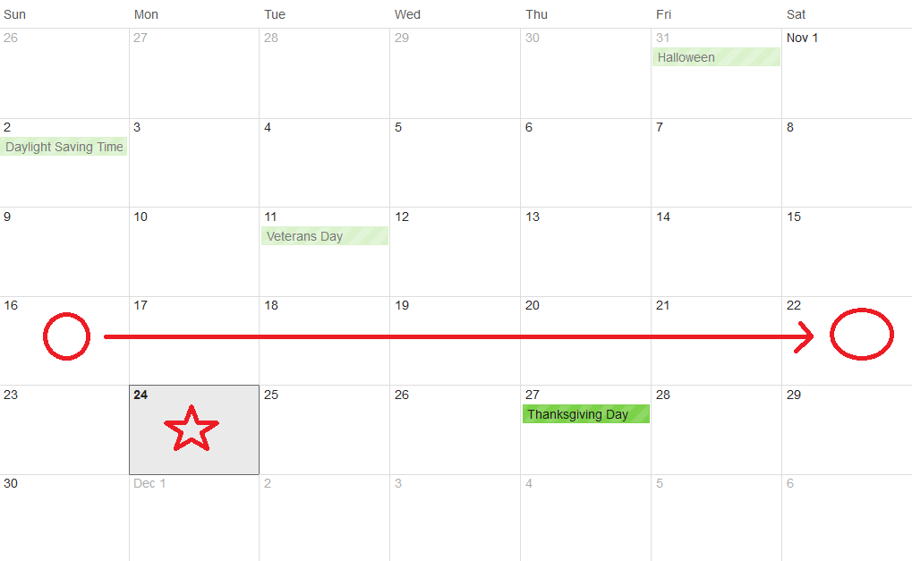

Development Blog
Created by a developer, for developers.
SSRS: Selecting Last Week
Selecting the previous week from Sunday to Saturday can be deceivingly difficult in SSRS's hybrid VB/SQL syntax, I'll outline how it's done in this post.
There are a number of reasons a business would need the previous week from Sunday to Saturday selected for a report in SSRS, I'll use the date at the time I'm writing this (11/24/14) to explain what I mean by "the previous week from Sunday to Saturday" in the image below:
Click here to continue...
Clearing Textboxes with JS
Clearing textboxes that use JQuery datepickers without posting back in ASP.net requires the use of some simple JavaScript client side scripting.
There are a number of reasons why you wouldn't want the page to post back, in this case the text boxes were inside a JQuery modal so a post back would close the window after processing.
The Code
The first step is creating a JavaScript function and declaring your variables. Make variables for each of the text boxes you want to clear and the check box that will the trigger the function.
Declaring function/variables:
function ClearDatesOnCheck() {
jQuery.noConflict();
var DateTo = document.getElementById("<%=txtDueDateTo.ClientID%>"),
DateFrom = document.getElementById("<%=txtDueDateFrom.ClientID%>"),
cbNullDate = document.getElementById("<%=chkNullDates.ClientID%>");Click here to continue...
Book Review: JavaScript and JQuery: Interactive Front-End Web Development
John Ducket's book, JavaScript and JQuery: Interactive Front-End Web Development, is a great reference tool for any developer. The design of every page is so beautiful, if you are a visual learner I cannot recommend this book enough. Almost every difficult concept is illustrated with helpful notes everywhere. It is so well written and the fonts just pop off the page, it almost reads like a magazine.

Click here to continue...